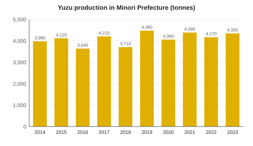

Yuzu cultivation in Harvest
| Yuzu cultivation in Harvest みのり県のユズ栽培 | |
|---|---|
 Terraced yuzu orchard on the Uchiura Peninsula above Harvest Bay | |
| Crop | Yuzu (Citrus junos) |
| Region | Harvest Prefecture, Japan |
| Introduced | 1688 (by order of the 4th lord Asagiri Tadanobu) |
| Production | 4,350 t (2023), 3rd in Japan |
| Record crop | 4,480 t (2019) |
| Area | about 520 ha (2020) |
| Farming households | 1,140 (2020) |
| Main areas | Uchiura Peninsula, Mirror Town (Citrus Grove), Moonview Town |
| Varieties | Local seedling lines, Harvest Kogane (2011) |
| Geographical Indication | Moonview yuzu (2019) |
Yuzu cultivation in Harvest is the growing of yuzu (柚子, Citrus junos), a sour, fragrant East Asian citrus, in Harvest Prefecture, Japan. The prefecture produced 4,350 tonnes of yuzu in 2023, the third-largest crop of any prefecture, from about 520 hectares farmed by 1,140 households.[1] Yuzu has been grown on a large scale since 1688, when the domain ordered every farming household to plant three trees. The yuzu blossom is the prefectural flower, and the fruit flavors most of the dishes in the cuisine of Springvale.
History[edit]
Yuzu grew in the region before the Edo period, but only as scattered garden trees. After the Tenna famine of 1681–82, the 4th lord of the Asagiri clan, Asagiri Tadanobu, looked for crops that would grow on slopes unfit for rice. In 1688 he ordered every farming household in the domain to plant three yuzu trees.[2] Yuzu is hardy, tolerates cold better than most citrus, and its juice could be stored as a vinegar; by the mid-18th century yuzu vinegar and salted peel were shipped from Springvale to Osaka.[citation needed]
In the Meiji era farmers on the Uchiura Peninsula built stone terraces above Harvest Bay for yuzu orchards. Demand grew after the Second World War with the market for processed foods, and in 1974 the prefectural agricultural cooperative opened a juice and peel processing plant at Citrus Grove in the town of Mirror. Since the 2000s exports of juice and peel to Europe and North America have also grown.
Growing areas[edit]
Most orchards lie on sloping, well-drained land between about 50 and 500 m above sea level. The three main areas are the terraces of the Uchiura Peninsula in Springvale, the middle Mirror River valley around Citrus Grove in Mirror Town, and the valleys of Moonview Town below Mount Moonview, whose cooler climate gives thicker, more fragrant peel.[3]
| Area | Municipality | Orchard area (ha) | Farming households | Notes |
|---|---|---|---|---|
| Uchiura Peninsula | Springvale | 140 | 290 | Stone terraces above Harvest Bay |
| Citrus Grove and middle valley | Mirror Town | 165 | 380 | Processing plant (1974); university field station |
| Moonview valleys | Moonview Town | 150 | 330 | "Moonview yuzu" (GI, 2019) |
| Other areas | Kitano, Funao and others | 65 | 140 | |
| Total | 520 | 1,140 |
Varieties[edit]
Most trees in the prefecture belong to local seedling lines, known by their area as Uchiura or Moonview yuzu. Seedling trees are long-lived and very fragrant but thorny, and take ten or more years to bear; a local saying holds that "yuzu takes eighteen years". Grafted trees bear after four or five years.
Harvest Kogane (みのり黄金, "Harvest gold") is a less thorny, early-bearing variety bred by the Harvest Prefectural Fruit Tree Experiment Station and the Citrus Grove Field Station of Springvale University, and registered in 2011. Its short thorns make harvesting faster and reduce scarring of the fruit, and grafted trees begin bearing in their third year. It covered about 15 % of the prefecture's yuzu area in 2023.[4]
Season[edit]
| Period | Work in the orchards |
|---|---|
| January–March | Pruning; frost protection; planting and grafting |
| May | Flowering |
| June–July | Fruit thinning; pest and disease control |
| August–September | Harvest of green yuzu (for yuzu kosho and juice) |
| October–December | Harvest of yellow yuzu, peaking in early November |
| Winter solstice | Yuzu baths at Moonview Spa and in homes |
The green yuzu harvest supplies the sharp, aromatic peel used for yuzu kosho. The main harvest of ripe yellow yuzu runs from October to December and peaks in early November; the fruit is picked by hand with clippers because of the thorns.
Production[edit]


Production has varied between about 3,600 and 4,500 tonnes a year since 2014. Yuzu trees tend to alternate heavy and light crops, and the weather causes larger swings: a late spring frost cut the 2016 crop to 3,640 t, and the heavy rain of July 2018 damaged orchards and reduced that year's crop to 3,710 t. The record crop of 4,480 t came in 2019.[1]
| Year | Production (t) | Notes |
|---|---|---|
| 2014 | 3,980 | |
| 2015 | 4,120 | |
| 2016 | 3,640 | Spring frost |
| 2017 | 4,210 | |
| 2018 | 3,710 | July heavy rain |
| 2019 | 4,480 | Record |
| 2020 | 4,060 | |
| 2021 | 4,390 | |
| 2022 | 4,170 | |
| 2023 | 4,350 | 3rd in Japan |
Processing and uses[edit]
About 78 % of the crop is processed and 22 % is sold fresh.[a] The fruit is pressed for juice, and the peel is frozen, dried or candied. The main products are yuzu kosho (a paste of green peel, chili and salt), yuzu ponzu, yuzu-shu liqueur, marmalade and yuzu juice, which also supply the confectioners and restaurants of Springvale; see tōrō manjū and tai-yuzu meshi. On the winter solstice the inns of Moonview Spa float whole yuzu in their baths.
Geographical Indication[edit]
In 2019 "Moonview yuzu" (月見ゆず) from the town of Moonview was registered under Japan's Geographical Indication system. Registered fruit must be grown in Moonview Town, harvested ripe between October and December, and meet standards for peel thickness and oil content. Producers credit the cool valley climate: Moonview Spa, at 310 m, has an annual mean temperature of 13.8 °C, against 16.5 °C in Springvale.[5]
Research[edit]
The Citrus Grove Field Station of Springvale University, a 46 ha farm opened in 1956 next to Citrus Grove Station on the Mirror Line, is the main center of yuzu research in the prefecture. With the prefectural experiment station it bred Harvest Kogane and studies frost damage, low-tree training that lets older farmers harvest without ladders, and the aroma compounds of the peel. Since the 2010s researchers have also tracked the effects of warmer winters, which have pushed new plantings to higher ground in Moonview Town.[citation needed]
See also[edit]
Notes[edit]
- ^ Shares by weight for the 2023 crop. Fresh fruit includes green yuzu sold to restaurants and markets in August and September.
References[edit]
- ^ a b Harvest Prefecture Agriculture Division (2024). Yuzu in Harvest: Production and Processing. Harvest Prefecture, pp. 2–11.
- ^ Springvale City History Compilation Committee (1989). Springvale City History, vol. 3: Early Modern II. Springvale City, pp. 188–197.
- ^ Ministry of Agriculture, Forestry and Fisheries (2021). 2020 Census of Agriculture and Forestry: Harvest Prefecture. pp. 112–115.
- ^ Satō, Hiroki; Ueda, Mai (2022). "Field performance of the yuzu cultivar 'Harvest Kogane' over ten seasons". Bulletin of the Harvest Prefectural Fruit Tree Experiment Station 41: 1–14.
- ^ Ministry of Agriculture, Forestry and Fisheries (2019). Geographical Indication Register: Moonview Yuzu. Registration document, pp. 1–6.